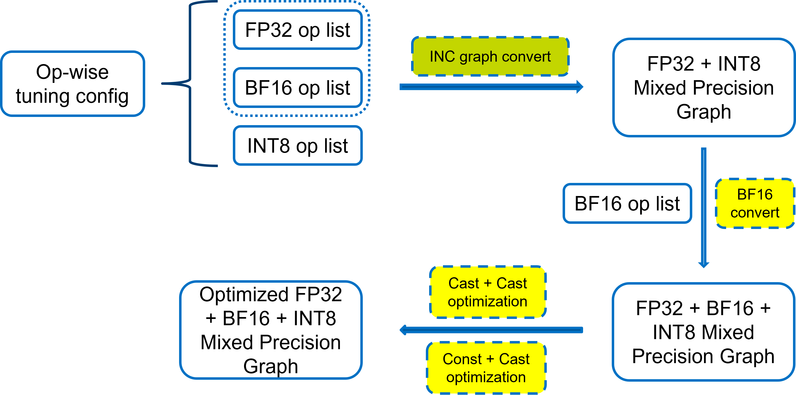

Tensorflow¶
Intel has worked with the TensorFlow development team to enhance TensorFlow to include bfloat16 data support for CPUs. For more information about BF16 in TensorFlow, please read Accelerating AI performance on 3rd Gen Intel® Xeon® Scalable processors with TensorFlow and Bfloat16.
BF16 conversion during quantization in TensorFlow

Three steps
Convert to a
FP32 + INT8mixed precision GraphIn this steps, TF adaptor will regard all fallback datatype as
FP32. According to the per op datatype in tuning config passed by strategy, TF adaptor will generate aFP32 + INT8mixed precision graph.Convert to a
BF16 + FP32 + INT8mixed precision GraphIn this phase, adaptor will convert some
FP32ops toBF16according tobf16_opslist in tuning config.Optimize the
BF16 + FP32 + INT8mixed precision GraphAfter the mixed precision graph generated, there are still some optimization need to be applied to improved the performance, for example
Cast + Castand so on. TheBF16Converttransformer also apply a depth-first method to make it possible to take the ops useBF16which can supportBF16datatype to reduce the insertion ofCastop.
PyTorch¶
Intel has also worked with the PyTorch development team to enhance PyTorch to include bfloat16 data support for CPUs.
BF16 conversion during quantization in PyTorch

Two steps
Convert to a
FP32 + INT8mixed precision Graph or ModuleIn this steps, PT adaptor will combine the
INT8ops and all fallback ops toFP32 + INT8mixed precision Graph or Module no matter in Eager mode or Fx Graph mode.Convert to a
BF16 + FP32 + INT8mixed precision Graph or ModuleIn this phase, adaptor will according to
BF16op list from strategy tune config to wrapper theFP32module withBF16Wrapperto realize theBF16 + FP32 + INT8mixed precision Graph or Module. adaptor will do retrace theGraphModuleagain if using Fx Graph mode.